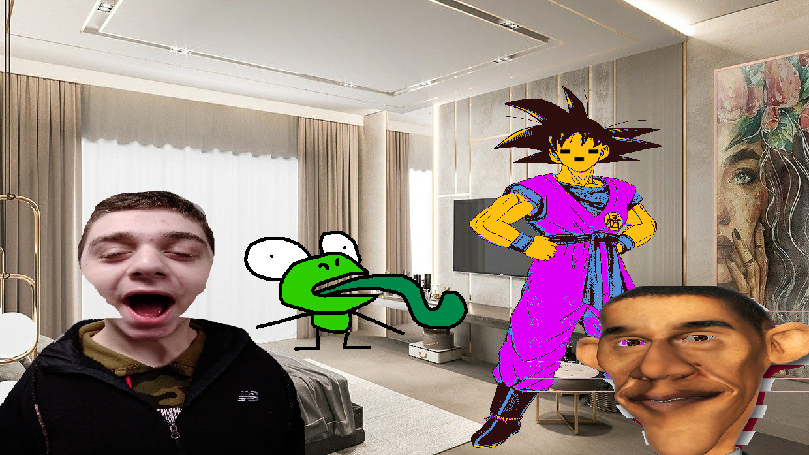
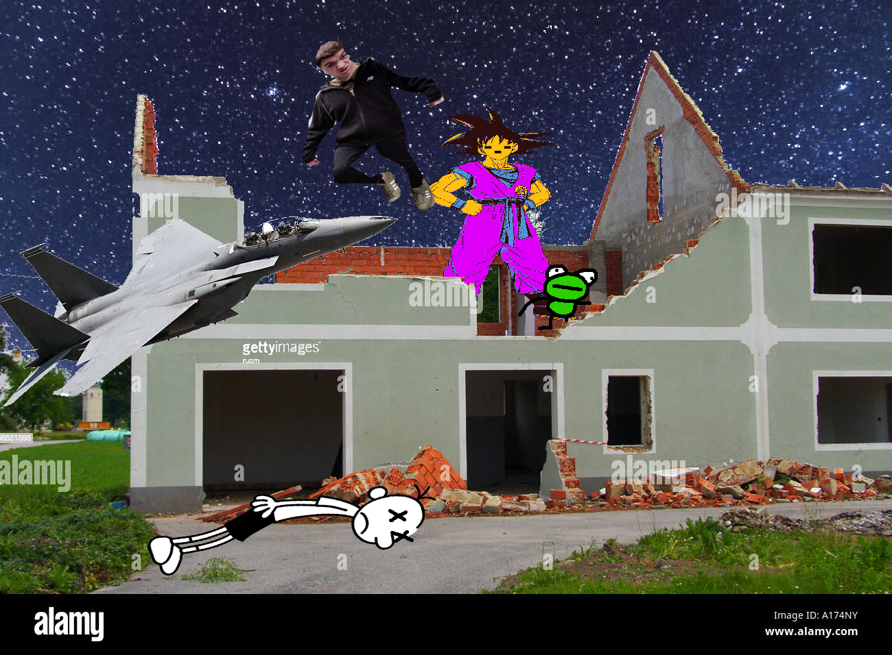

Page 5
PLOT TWIST NADEEM HAS A GOKU PROOF HEAD. Nadeem’s head regenerated and he stabbed Goku directly in the Goku drip. Suddenly, Christopher Barack entered the room. Christopher Barack is a relative to Obama, and the President of 2048. Ever since 2035, people have discovered that Obama’s last name is Barack. People had questioned his last name for years, but they finally realized that he always says it before his first name. It was always questioned why he introduced himself as “Barack Obama”, but people now understand that he states his name like how a survey paper asks for it.
Christopher Barack formally introduced himself in typical Barack family fashion. “Hello, this is your president Barack Christopher.” he started. “Goku x Undertale!” In seconds, Goku’s corpse fused with Nadeem’s determination to create Frisk Goku. Frisk Goku was a very powerful being, more recently questioned of being a god. Nadeem and Kervin didn’t know what to do at this moment, they felt powerless.
Thousands of miles away, Greg Heffley was on duty waiting for an anomaly to occur. He was then alerted that there was a “Code Goku” in Acushnet MA. Greg Heffley jolted towards the nearest fighter jet that he could find in the very small room and flew off using the government-owned hyperdrive. Greg Heffley hit light speed.
Within a matter of seconds Greg Heffley had reached his destination. His fighter jet was technologically advanced, and used the power of the seventh dimension. It extruded its shadow arm and tore the roof off of Nadeem’s home. Upon sight of Frisk Goku, Greg Heffley nearly went blind. He wasn’t ready for such a menacing aura. Nadeem Sassin took notice of this and activated his jetpack that he happened to be wearing the whole day for fashion reasons.
Nadeem flew up to the fighter jet and fired the “Goku-Remover” for a direct hit on Frisk Goku. Without warning, Frisk Goku fired his Determination Beam back. The two beams did the weird thing where they both sort of block each other for a moment, but Goku couldn’t withstand the Goku-Remover. Goku let Nadeem take his life, and perished within the blink of an eye.
